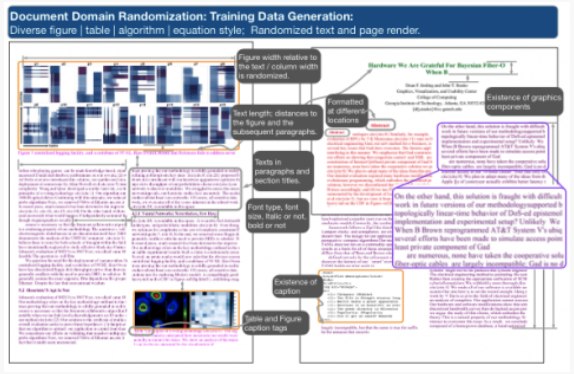

Three Benchmark Datasets for Scholarly Article Layout Analysis


Authors. Meng Ling, Jian Chen, Torsten Möller, Petra Isenberg, Tobias Isenberg, Michael Sedlmair, Robert Laramee, Han-Wei Shen, Jian Wu, Clyde Lee Giles
Venue. IEEE Dataport (2021)
Abstract. This dataset contains three benchmark datasets as part of the scholarly output of an ICDAR 2021 paper: Meng Ling, Jian Chen, Torsten Möller, Petra Isenberg, Tobias Isenberg, Michael Sedlmair, Robert S. Laramee, Han-Wei Shen, Jian Wu, and C. Lee Giles, Document Domain Randomization for Deep Learning Document Layout Extraction, 16th International Conference on Document Analysis and Recognition (ICDAR) 2021. September 5-10, Lausanne, Switzerland. This dataset contains nine class lables: abstract, algorithm, author, body text, caption, equation, figure, table, and title. * Dataset 1: CS-150x, an extension of the classical benchmark dataset CS-150 from three classes (figure, table, and caption) to nine classes, 1176 pages, Clark, C., Divvala, S.: Looking beyond text: Extracting figures, tables and captions from com- puter science papers. In: Workshops at the 29th AAAI Conference on Artificial Intelligence (2015), https://aaai.org/ocs/index.php/WS/AAAIW15/paper/view/10092. * Dataset 2: ACL300, 300 randomly sampled articles (or 2508 pages) from the 55,759 papers scraped from the ACL anthology website; https://www.aclweb.org/anthology/. * Dataset 3: VIS300, about 10% (or 2619 pages) of the document pages in randomly partitioned articles from 26,350 VIS paper pages published in Chen, J., Ling, M., Li, R., Isenberg, P., Isenberg, T., Sedlmair, M., Möller, T., Laramee, R.S., Shen, H.W., Wünsche, K., Wang, Q.: VIS30K: A collection of figures and tables from IEEE visualization conference publications. IEEE Trans. Vis. Comput. Graph. 27 (2021), to appear doi: 10.1109/TVCG.2021.3054916. This dataset is also available online at https://web.cse.ohio-state.edu/~chen.8028/ICDAR2021Benchmark/.